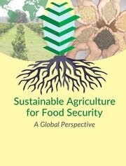

Content of Website
- Introduction : To brief Introduction about Sustainable Agriculture and Food Security
- Sustainable Agriculture : To explore Why we need sustainable agriculture ,different concepts in Sustainable Agriculture

- Food Security : Detailed description of Food Security
- Top 25 Crops in India with suitable Parameters
- Summary
- References